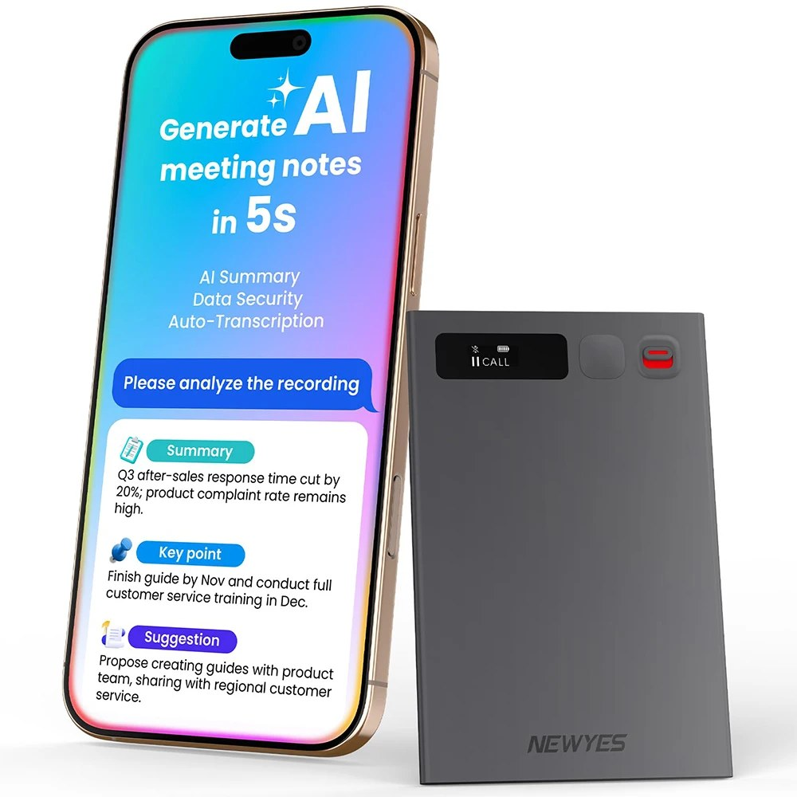

명함보다 얇은 'AI 녹음기', 알리에서 9만 원대 — 회의·상담·강의 다 받아 적는 요즘 아이디어 상품 2종
스마트폰 녹음은 통화가 오면 끊기고, 한 시간짜리 파일은 다시 듣기 어렵습니다. BOYA Notra Neo와 NEWYES Ailog를 같은 조건에서 비교했습니다.
가격·평점·재고는 2026년 11월 25일 알리익스프레스에서 직접 확인한 값입니다. 할인은 12월 3일 23:59까지로 표기되어 있고, 실제 결제 금액은 쿠폰·배송지에 따라 달라질 수 있습니다.
들어가며 — 스마트폰 녹음기로는 왜 안 될까
회의나 상담, 강의를 다녀오면 늘 같은 아쉬움이 남습니다. "아까 그 이야기, 적어 놨어야 했는데." 스마트폰 녹음 앱을 켜 두면 되지 않냐 싶지만, 막상 써 보면 세 가지가 걸립니다.
첫째, 통화가 오면 녹음이 끊깁니다. 둘째, 한 시간짜리 파일을 다시 들으면서 받아 적을 자신이 없습니다. 셋째, 파일이 폰 안에만 쌓여서 나중에 찾아 쓰기가 어렵습니다.
이 세 가지를 한 번에 해결하려고 나온 게 이른바 'AI 메모기(AI note taker)' 입니다. 녹음은 기기가 따로 하고, 스마트폰 앱이 음성을 글자로 바꾸고 요약까지 해 줍니다. 값이 20만~30만 원대인 제품이 대부분인데, 알리에서는 9만 원대와 5만 원대로 올라와 있는 모델이 있어 이번에 두 개를 직접 비교해 봤습니다.
한눈에 보기 — 이번에 고른 두 제품
| 구분 | ① BOYA Notra Neo | ② NEWYES Ailog (AR0101) |
|---|---|---|
| 모양 | 63×63×6.8mm 카드형, MagSafe 자석 | 명함형 알루미늄 바디 + LED 화면 |
| 가격(확인 시점) | ||
| 평점·판매 | 4.8 (리뷰 10건) · 170개 판매 | 4.9 (리뷰 38건) · 235개 판매 |
| 저장·녹음시간 | 8GB(최대 1,000시간분) · 20시간 연속 | 64GB(512시간분) · 28시간 연속(제조사 표기) |
| 전사 언어 | 140개 이상 + 화자 구분 | 188개 이상 번역 · 93개 언어 동시통역(제조사 표기) |
| 무료 전사량 | 월 320분 | 월 600분 |
| 판매처 | BOYA Official Store(긍정 피드백 96.1%) | NeWYeS Official Store |
| 배송 | 무료 · 12/01~06 도착 예정 | 무료 · 11/30~12/06 도착 예정 |
두 제품 모두 한국 배송이 되고, 평점 4.6 이상에 실구매 후기가 붙어 있는 상품만 골랐습니다. 다만 아래에서 설명할 '한국어 지원'과 '구독료' 두 가지는 꼭 읽어 보시고 결정하시길 권합니다.
① BOYA Notra Neo — 마이크 회사가 만든 '자석 붙이는 AI 메모기'

BOYA(보야) 는 카메라·촬영용 마이크로 알려진 중국 브랜드입니다. 그 회사가 만든 2세대 AI 노트테이커가 Notra Neo 입니다. 알리익스프레스에서는 BOYA 공식 스토어가 직접 판매하고 있고(긍정 피드백 96.1%, 팔로워 49.5K), 색상은 화이트·블랙·라이트핑크·옐로 4가지입니다.
■ 생김새와 쓰는 법
- 크기가 63×63mm, 두께 6.8mm입니다. 카드보다 조금 크고, 손바닥에 올리면 거의 안 보입니다.
- 뒷면이 자석이라 아이폰 뒷면(MagSafe)에 그대로 붙습니다. 마그네틱 링도 동봉되어 있어 케이스에 붙여 쓰거나, 셔츠 주머니·가방끈에 붙여 둘 수도 있습니다.
- 버튼은 사실상 녹음 버튼 하나입니다. 길게 누르면 진동 한 번과 함께 녹음이 시작되고, 다시 길게 누르면 진동 두 번과 함께 끝납니다. 녹음 중에 짧게 누르면 중요한 순간을 표시(북마크) 해 둘 수 있습니다.
■ 핵심 기능 (제조사 표기 기준)
- 녹음 모드 3가지가 자동으로 바뀝니다 — ①주변 소리(대면 대화, 최대 5m) ②전화 통화 ③블루투스 이어폰 오디오. 상황에 따라 사람이 모드를 고를 필요가 없다는 점이 이전 모델(Notra)과 다른 부분입니다.
- 마이크 2개(MEMS) + 진동 센서(VCS) 1개, AI 노이즈 캔슬링 최대 -30dB, 360도 수음.
- 녹음이 끝나면 Boya OS 앱(또는 웹) 으로 자동 전송됩니다. 블루투스로 보내다가 필요하면 Wi-Fi '빠른 전송'을 쓸 수 있습니다.
- 앱에서 140개 이상 언어 전사 + 화자 구분, AI 요약·할 일 목록·마인드맵, 60개 이상의 요약 템플릿, 지난 녹음 전체를 대상으로 하는 Ask AI 검색, 10가지 형식 내보내기(MP3·WAV·DOCX·PDF·TXT·Markdown·SRT·JPEG 등)를 지원합니다.
- 요약에 쓰이는 AI 모델은 ChatGPT·Gemini·Claude·Grok 입니다(요금제에 따라 달라짐).
- 저장은 8GB(최대 1,000시간분), 충전 한 번에 20시간 연속 녹음. 녹음 파일은 무료 클라우드 동기화가 됩니다.
■ 실제로 이렇게 씁니다
- 회의·워크숍·위원회: 회의 중에는 받아 적지 않고, 끝나면 요약과 '할 일' 목록이 나옵니다.
- 상담·면담·인터뷰: 말로만 오간 이야기를 나중에 확인할 때. 다만 사람 사이의 대화이니 녹음 사실을 미리 말하는 것이 기본입니다(아래 체크포인트 5번).
- 병원 진료·관공서 창구: 어르신께 특히 유용합니다. 설명을 다 받아 적기 어려울 때, 집에 와서 요약을 다시 볼 수 있습니다.
■ 실구매 후기에서 갈리는 점 (원문 영어 후기의 번역) 알리 상품 페이지의 후기 10건은 모두 실구매 인증 리뷰입니다(5점 8건·4점 2건).
- 좋은 점: "배송이 빨랐고 MagSafe 자력이 강하다. 녹음 품질과 AI 전사 기능에 만족한다. 회의·컨퍼런스에서 정말 유용할 것 같다."(11월 11일)
- 아쉬운 점: "기기 자체는 좋은데 앱이 조금 더 나아졌으면 한다. 그래도 같은 값의 다른 제품보다 싸고 유용하다."(11월 13일)
- 해외 IT 매체의 장기 사용 리뷰(독일 techreviewer, 2026년 9월 / 프랑스 maison-et-domotique, 2026년 10월)도 비슷합니다. 전사 품질은 쓸 만하지만 화자 구분과 전문용어에서 오류가 생기고, 앱 생태계는 아직 경쟁 제품보다 단순하다는 평가였습니다.
BOYA Notra Neo 알리익스프레스에서 보기 (₩94,800, 12/3까지) →제휴 링크 · 구매 가격은 동일합니다
② NEWYES Ailog — 5만 원대, 화면까지 달린 '가성비' 카드형 녹음기

NEWYES 는 전자노트·번역기로 알려진 중국 브랜드입니다. 이 제품은 명함 크기의 얇은 알루미늄 바디에 LED 화면이 붙은 모델(모델명 AR0101-2)로, 알리익스프레스 NeWYeS 공식 스토어가 판매합니다. 현재는 Choice 한정딜로 12만 원대에서 5만 6천 원대까지 내려와 있습니다.
■ 핵심 기능 (판매 페이지 표기 기준)
- 64GB 저장(512시간분), 한 번 충전에 28시간 연속 녹음, LED 화면으로 배터리·녹음 상태를 바로 확인.
- 공기전도 센서 + VCS 방식으로 주변 소리와 통화 녹음을 함께 담습니다.
- 블루투스로 앱과 연결해 전사·요약. GPT-4.1 등 여러 AI 모델로 회의록 요약과 마인드맵을 만듭니다.
- 188개 이상 음성 번역, 93개 언어 동시통역(제조사 표기).
- 알루미늄 합금 바디, 로컬 암호화 + 전용 클라우드 보관.
■ 실구매 후기에서 갈리는 점 (원문 영어 후기의 번역)
- 좋은 점: "AI 클라우드를 안 써도 된다. PC에 꽂으면 외장 드라이브처럼 MP3 파일이 그대로 보여서 내려받아 처리하면 된다. 아이폰 기본 음성메모보다 낫고, 알루미늄 마감이 아주 좋다."(10월 30일) — 컴퓨터로 파일을 직접 꺼내 쓸 수 있다는 점을 높게 평가한 후기입니다.
- 아쉬운 점: "크기가 작고 소리도 잘 잡는데, 앱의 '가입/로그인' 버튼이 가끔 눌리지 않는다."(2월 10일)
- 참고: 이 상품의 리뷰 38건 중 일부는 알리익스프레스가 '유사 상품'의 후기를 함께 집계한 것입니다(상품 페이지에 그렇게 표기되어 있습니다). BOYA 쪽은 10건 모두 이 상품 자체의 후기입니다.
NEWYES Ailog 알리익스프레스에서 보기 (₩56,700, 12/3까지) →제휴 링크 · 구매 가격은 동일합니다
사기 전에 꼭 봐야 할 체크포인트 5가지
여기서부터가 이 글의 핵심입니다. 이런 기기는 '기기 값'보다 '앱 이용 조건'에서 갈립니다.
1) 한국어 지원 — 가장 중요한데, 페이지에 확정 표기가 없습니다
두 제품 모두 "140개 이상", "188개 이상"처럼 언어 '개수'만 표기하고 실제 언어 목록은 공개하지 않았습니다. 한국어 전사가 되는지는 판매 페이지에 명시되어 있지 않습니다.
확인된 사실 하나를 덧붙이면, BOYA의 앱(Boya OS)은 앱스토어에 표시된 지원 언어 12개(영어·아랍어·프랑스어·독일어·이탈리아어·일본어·포르투갈어·러시아어·중국어 간체·번체·스페인어·터키어)에 한국어가 없습니다. 즉 앱 화면은 영어로 쓰게 될 가능성이 큽니다.
구매 전에 판매자에게 이렇게 물어보세요. "한국어 음성 전사(transcription)가 지원되나요? 앱 UI에 한국어가 있나요?" — 답변을 받아 두면 나중에 분쟁 때도 도움이 됩니다. 알리익스프레스 상품 페이지의 'Message' 버튼으로 바로 문의할 수 있습니다.
2) 구독료 — '무료'라고 쓰여 있지만 전사 분량은 정해져 있습니다
- BOYA: 무료 요금제는 월 320분입니다. (새 기기를 등록하면 2026년 12월 31일까지 12개월간 월 600분으로 올려 준다고 제조사가 안내합니다.) 그 이상은 Pro 월 $17.99(1,280분), Ultimate 월 $29.99(무제한).
- NEWYES: 월 600분 무료, 초과 시 Premium 월 $69.99, Unlimited 연 $149.99.
👉 월 320~600분은 대략 회의 5~10시간 분량입니다. 한 달에 몇 번만 쓰면 무료로 충분하지만, 매일 회의를 받아 적는 분이라면 기기 값보다 구독료가 더 클 수 있습니다. 이건 BOYA가 NEWYES보다 확실히 유리한 부분입니다(NEWYES는 유료 전환이 훨씬 비쌉니다).
3) 배터리·저장은 'AI 사용량'과 별개입니다
- BOYA: 8GB / 20시간 연속, NEWYES: 64GB / 28시간 연속(제조사 표기).
- 녹음 자체는 기기 안에 하니, 인터넷이 없어도 녹음은 됩니다. 전사·요약은 나중에 앱으로 보내서 합니다. 즉 "녹음은 되는데 요약은 나중에"가 정상 동작입니다.
- 표기된 시간은 제조사 기준값이고, 사용 환경(모드·소음·통화 녹음)에 따라 줄어듭니다.
4) 배송·통관·인증
- 두 상품 모두 무료배송, 확인 시점 기준 11월 30일~12월 6일 도착 예정(CJ로지스틱스·Korea ePOST 등)으로 표시되어 있습니다. 할인은 12월 3일 23:59까지입니다.
- 물품가액·수량에 따라 통관 시 관세·부가세가 붙을 수 있습니다. 결제 화면의 최종 금액과 통관 안내를 확인하세요.
- KC 적합성평가(전파인증) 표기를 두 상품 스펙란에서 찾지 못했습니다. 블루투스를 쓰는 기기라 국내 인증 표시가 있는지, 없을 경우 통관·AS에서 문제가 없는지는 구매 전 판매자에게 확인하시길 권합니다. (같은 날 함께 본 다른 AI 녹음기 상품에는 "KC Certification: Unavailable(판매자 미제공)"이라고 아예 적혀 있기도 했습니다.)
5) 녹음 예절과 법 — 기계보다 사람이 먼저입니다
- 우리나라 통신비밀보호법은 대화의 당사자가 직접 녹음하는 것 자체는 처벌하지 않습니다. 하지만 녹음 사실을 알리지 않고 그 내용을 공개·유포하면 처벌 대상이 될 수 있습니다.
- 회의·상담에서는 "녹음해도 될까요?" 한마디가 기본입니다. 특히 사적인 대화라면 더 그렇습니다.
- 이 항목은 일반적인 안내이며 법률 자문이 아닙니다. 민감한 상황이라면 별도로 확인하세요.
그래서 어느 쪽?
| 이럴 때 | 추천 |
|---|---|
| 회의·강의를 자주, 앱에서 바로 요약까지 쓰고 싶다 | ① BOYA Notra Neo — 브랜드 마이크, 자동 모드 전환, 요약 템플릿 60종, 구독료 부담이 적음 |
| 일단 싸게 AI 녹음기를 써 보고 싶다, 파일을 PC로 직접 꺼내 쓰고 싶다 | ② NEWYES Ailog — 64GB·화면·가성비, 다만 무료 600분 이후 요금이 비쌈 |
둘 다 '스마트폰 없이 녹음하고, 나중에 글자로 받는다' 는 목적은 같습니다. 차이는 앱의 완성도(BOYA) 와 가격(NEWYES) 입니다.
링크 모아 보기
- ① BOYA Notra Neo (₩94,800, 12/3 23:59까지) → https://s.click.aliexpress.com/e/_c3wbmTVR
- ② NEWYES Ailog (₩56,700, 12/3 23:59까지) → https://s.click.aliexpress.com/e/_c4U875tJ
가격과 재고는 수시로 바뀌니, 링크로 들어가 결제 화면의 최종 금액을 꼭 확인하세요.
이 포스팅은 알리익스프레스 어필리에이트 활동의 일환으로, 이에 따른 일정액의 수수료를 제공받습니다.
이어서 읽기
 쿠팡 · AI 스마트 가전
쿠팡 · AI 스마트 가전